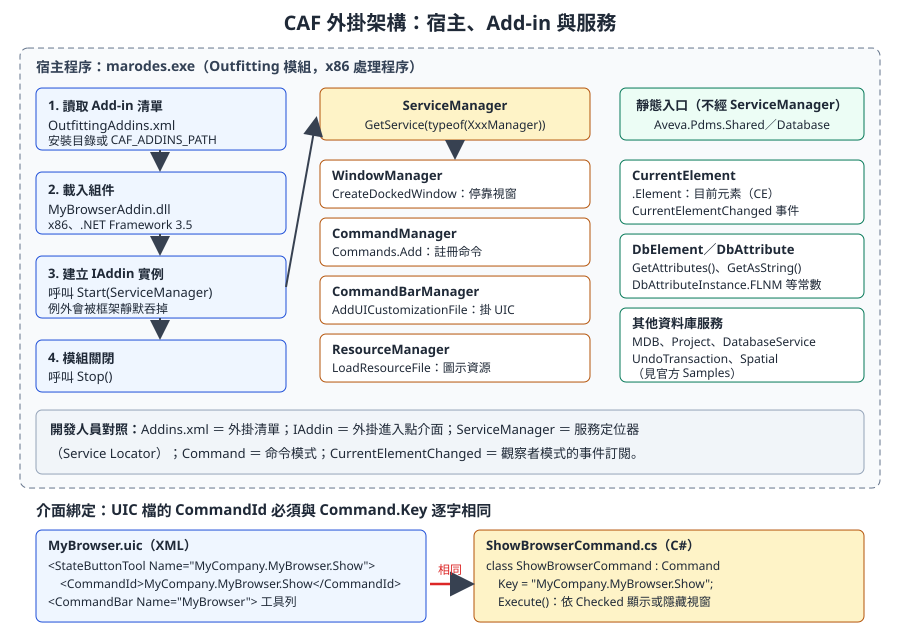
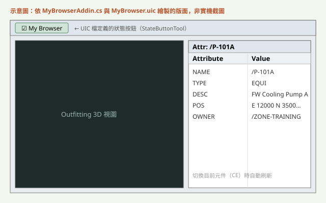
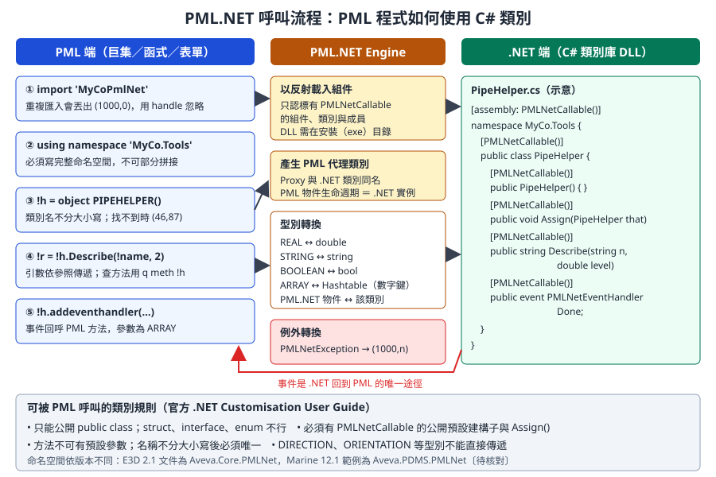

第 14 章 .NET 開發：PML.NET 與 CAF Add-in
本章說明什麼時候該從 PML 換成 C#，以及兩條 .NET 路線的寫法與部署：CAF Add-in（在模組內掛一個外掛，擁有自己的視窗、命令與工具列）與 PML.NET（把 C# 類別包成 PML 可以
object出來的物件）。核心範例是examples/starter-kit-mybrowser/，本章逐行解說。資料可信度： PML.NET 的規則、型別對應、
CAF_ADDINS_PATH與CAF_UIC_PATH的行為，取自 AVEVA 官方 .NET Customisation User Guide（help.aveva.com 上的 AVEVA E3D 2.1 版本）。AVEVA Marine 12.1 與 E3D 2.1 同屬 PDMS 技術系譜，架構相同，但命名空間與組件版本不同（例如 E3D 2.1 文件寫Aveva.Core.*，Marine 12.1 的官方範例寫Aveva.Pdms.*、Aveva.PDMS.PMLNet）。MyBrowser 範例來自 MIT 授權的開源專案 aveva-marine-dev-skill，針對 Marine 12.1 SP4 撰寫，本課程未在實機上執行。版本相依的細節標為〔待核對〕，請以公司安裝目錄下的Samples\與說明檔核對。
14.1 學習目標
讀完本章，你應該能夠：
- 依需求判斷該用 PML、PML.NET、CAF Add-in 或獨立程式。
- 說明 CAF 的組成：
IAddin、ServiceManager、WindowManager、CommandManager、CommandBarManager，以及它們對應的軟體設計模式。 - 讀懂並修改 MyBrowser 範例的每一行，知道 UIC 檔的
CommandId為什麼必須與Command.Key一致。 - 用
DbElement、DbAttribute、DbAttributeInstance、CurrentElement讀取資料庫。 - 寫出一個
[PMLNetCallable]類別，並在 PML 中用import、using namespace、object呼叫它。 - 設定正確的建置參數（.NET Framework 3.5、x86、
Copy Local = false），並用<模組>Addins.xml與CAF_ADDINS_PATH部署。 - 排除「外掛沒有載入」「按鈕沒有反應」「中斷點不會停」等常見問題。
14.2 什麼時候用 C
PML 能完成大多數查詢、表單與批次工作（第 11 至 13 章）。下表整理四條路線的差別：
| 路線 | 程式在哪裡執行 | 適合 | 不適合 | 部署難度 |
|---|---|---|---|---|
| PML | 模組內的 PML 直譯器 | 查詢、表單、選單、批次修改 | 複雜演算法、網路通訊、資料庫連線 | 低：複製到 PMLLIB |
| PML.NET | PML 呼叫 C# 類別，在同一個處理程序 | 補足 PML 做不到的功能（例如 HTTP、複雜計算、讀寫 Excel） | 大型 UI | 中：DLL 放到安裝目錄 |
| CAF Add-in | 模組啟動時載入的 C# 外掛 | 停靠視窗、事件監聽、工具列、與 ERP／PDM 整合 | 只需要一張簡單表單的工具 | 中高：DLL、UIC、Addins.xml |
| 獨立程式 | 不開圖形介面，自己啟動 AVEVA 核心 | 夜間批次、資料轉檔 | 需要使用者互動的工具 | 高：需要授權與環境設定〔待核對〕 |
判斷原則：
- 能用 PML 完成且不超過幾百行，就用 PML。部署與維護成本最低，公司裡會 PML 的人也比較多。
- 只缺「一個 PML 做不到的函式」，用 PML.NET 包一個小類別，介面仍留在 PML。
- 需要常駐的視窗、要監聽目前元素變化，或要與外部系統做雙向整合，用 CAF Add-in。
- 船體模型資料的讀取，優先考慮 Vitesse 或 marAPI（第 15 章），不要用 .NET 直接猜船體元素的屬性。
開發人員須知： .NET 外掛和模組跑在同一個處理程序裡。外掛當掉、卡住或吃光記憶體，整個 AVEVA 模組會一起出問題，使用者未存檔的工作可能遺失。這和一般 Web 服務「掛了重啟就好」的經驗完全不同，所以例外處理與效能要比平常更保守。
14.3 CAF 架構
CAF（Common Application Framework）是 AVEVA 模組的應用程式框架。Outfitting、Design、Hull 等模組都是 CAF 的「宿主程式」，啟動時依清單載入外掛，再把框架提供的服務交給外掛使用。

圖 14-1 CAF 外掛架構與服務。左側是載入順序，中間是透過 ServiceManager 取得的服務，右側是不經 ServiceManager 的靜態入口，下方是 UIC 與命令的綁定關係。（本課程自繪）
14.3.1 對照表：CAF 元件與熟悉的設計模式
| CAF 元件 | 作用 | 開發人員熟悉的對應 |
|---|---|---|
<模組>Addins.xml |
列出要載入的外掛組件名稱 | 外掛清單、plugins.json |
IAddin |
外掛主類別必須實作的介面：Name、Description、Start(ServiceManager)、Stop() |
外掛進入點介面、生命週期掛勾 |
ServiceManager |
以 GetService(typeof(...)) 取得框架服務 |
服務定位器（Service Locator）、簡化版的依賴注入容器 |
WindowManager |
建立停靠視窗、MDI 視窗，管理版面 | 視窗管理器 |
CommandManager |
註冊命令物件 | 命令模式（Command Pattern）的命令登錄處 |
CommandBarManager |
工具列、選單、載入 UIC 檔 | UI 組態載入器 |
ResourceManager |
載入圖示等資源檔 | 資源管理 |
Command |
一個可被按鈕、選單觸發的動作，以 Key 識別 |
命令物件 |
UIC 檔（.uic） |
用 XML 宣告工具列、按鈕與命令的對應 | 宣告式 UI 組態、Ribbon XML |
CurrentElement.CurrentElementChanged |
目前元素改變時觸發的事件 | 觀察者模式、事件訂閱 |
14.3.2 模組、執行檔與 Addins.xml
外掛要掛在哪個模組，就寫進那個模組的清單。以下對應整理自開源知識庫對 Marine 12.1 SP4 marine.bat 的調查，公司版本請自行確認〔待核對〕：
| 模組 | 執行檔 | Add-in 清單 |
|---|---|---|
| Outfitting | marodes.exe |
OutfittingAddins.xml |
| Design | des.exe |
DesignAddins.xml |
| Hull Design | marhdes.exe |
HullDesignAddins.xml |
| Marine Drafting | mardra.exe |
marinedraftingaddins.xml（檔名全小寫） |
| Outfitting Draft | marodra.exe |
OutfittingDraftAddins.xml |
| Admin | adm.exe |
AdminAddins.xml |
清單的格式是 ArrayOfString，每個 <string> 是一個組件名稱，不含 .dll：
<?xml version="1.0" encoding="utf-8"?>
<ArrayOfString xmlns:xsi="http://www.w3.org/2001/XMLSchema-instance"
xmlns:xsd="http://www.w3.org/2001/XMLSchema">
<string>ExplorerAddin</string>
<!-- 官方外掛略 -->
<string>MyBrowserAddin</string>
</ArrayOfString>
14.3.3 CAF_ADDINS_PATH 與 CAF_UIC_PATH
官方 .NET Customisation User Guide（E3D 2.1）對兩個環境變數的說明如下：
| 環境變數 | 用途 | 未設定時 | 多個路徑 |
|---|---|---|---|
CAF_ADDINS_PATH |
尋找 <模組名稱>Addins.xml |
使用產品安裝目錄 | 以分號分隔，依序搜尋 |
CAF_UIC_PATH |
尋找 <模組名稱>Customization.xml、UIC 檔與資源檔 |
使用產品安裝目錄；安裝目錄一定會隱含附加在最後 | 以分號分隔 |
搜尋規則重點：
- 框架會在列出的目錄中尋找同名的 Addins.xml，所有找到的檔案內容都會讀入，重複的項目只算一次。
- 官方建議把安裝目錄也列進
CAF_ADDINS_PATH，否則標準外掛不會載入。 Customization.xml中可用$1代表專案代碼（例如$1.uic會換成APS.uic），可加Optional="true"讓檔案不存在時不報錯。UIC 檔依序處理，容器（工具列、選單）必須先定義，才能把按鈕加進去。
專業提醒： 這兩個變數在 Marine 12.1 的行為應與 E3D 2.1 相同（開源知識庫的 Marine 案例文章也提到
CAF_ADDINS_PATH），但請在公司版本實測一次〔待核對〕。實測方式：把一個只含自家外掛的OutfittingAddins.xml放在公司目錄，設定CAF_ADDINS_PATH=公司目錄;安裝目錄，確認自家外掛與官方外掛都有載入。
14.3.4 UIC 檔：宣告式介面
UIC 是 XML，描述工具、工具列、選單與右鍵選單。重點節點：
| 節點 | 內容 |
|---|---|
<Tools> |
工具定義池：ButtonTool、StateButtonTool、MenuTool、ComboBoxTool 等 |
<Command> |
工具按下時執行的命令。<Type>Instance</Type> 加 <CommandId> 指向已註冊的 .NET 命令；<Type>Macro</Type> 加 <Macro> 可直接執行 PML，例如 show !!myForm |
<CommandBars> |
工具列，列出要放哪些工具 |
<InstanceTools> |
把已定義的工具插入既有選單，可用 Parent、AfterSibling 定位〔待核對〕 |
<Namespace> |
資源命名空間，影響圖示資源的查找 |
載入 UIC 有兩種方式：
- 在模組的
Customization.xml登記（會動到官方清單，或需要另外設定CAF_UIC_PATH）。 - 外掛在
Start()內呼叫CommandBarManager.AddUICustomizationFile("檔名.uic", "名稱")。MyBrowser 採用這種方式，不需要修改任何官方清單，建議自家外掛一律這樣做。
14.4 資料庫 API
CAF 外掛讀寫模型資料，主要用 Aveva.Pdms.Database 與 Aveva.Pdms.Shared 兩個命名空間。它們和第 12 章的 PML 操作是同一個資料庫的兩種介面。
| 類別 | 用途 | 對應的 PML 概念 |
|---|---|---|
DbElement |
一個資料庫元素。DbElement.GetElement("/名稱") 依名稱取得，找不到時回傳 null 元素，要用 IsNull 判斷 |
DBREF、!!ce |
DbAttribute |
一個屬性的定義（包含 UDA），可用 DbAttribute.GetDbAttribute("名稱") 取得 |
屬性名稱 |
DbAttributeInstance |
系統屬性的靜態常數，例如 NAME、DESC、FLNM、FLNN |
寫在程式裡的屬性名稱 |
DbElementTypeInstance |
元素型別常數，例如 SITE、EQUIPMENT、NOZZLE |
'EQUI'、'NOZZ' |
CurrentElement |
靜態類別：Element 屬性是目前元素，CurrentElementChanged 事件 |
!!ce 與 CE 切換 |
DBElementCollection、TypeFilter |
依範圍與條件收集元素 | COLLECTION 物件 |
UndoTransaction |
把多筆修改包成一個可復原的步驟 | MARKDB／UNDOABLE |
讀取屬性的常用方法：
| 屬性型別 | 讀取 | 寫入 |
|---|---|---|
| 字串 | GetString(att) |
SetAttribute(att, "文字") |
| 實數 | GetDouble(att) |
SetAttribute(att, 60.0) |
| 整數、布林 | GetInteger(att)、GetBool(att) |
SetAttribute(att, 3)、SetAttribute(att, true) |
| 參照 | GetElement(att) |
SetAttribute(att, 另一個 DbElement) |
| 位置、方向 | GetPosition(att)、GetDirection(att) |
SetAttribute(att, position) |
| 任何型別轉成文字 | GetAsString(att) |
不適用 |
以下是唯讀查詢的寫法：依名稱取得一個 ZONE，列出底下所有設備的名稱與描述。
// 示意：依官方 Samples 的 API 寫法改寫，未在實機執行
using Aveva.Pdms.Database;
using Aveva.PDMS.Database.Filters; // 命名空間大小寫依版本而定〔待核對〕
public static string ListEquipment(string zoneName)
{
DbElement zone = DbElement.GetElement(zoneName);
if (zone.IsNull)
return "找不到 " + zoneName;
TypeFilter filter = new TypeFilter(DbElementTypeInstance.EQUIPMENT);
DBElementCollection coll = new DBElementCollection(zone, filter);
System.Text.StringBuilder sb = new System.Text.StringBuilder();
foreach (DbElement e in coll)
{
sb.Append(e.GetAsString(DbAttributeInstance.FLNN));
sb.Append('\t');
sb.AppendLine(e.GetAsString(DbAttributeInstance.DESC));
}
return sb.ToString();
}
專業提醒： 寫入資料庫前，請先讀第 2 章的 Team、Claim 與 Savework。
DbElement有Claim()、Release()，MDB.CurrentMDB.SaveWork(...)可提交工作。批次修改要用UndoTransaction包起來，讓使用者能一次復原。本課程的外掛範例全部是唯讀的，寫入型外掛必須經過第 17 章的審查流程。開發人員須知： 不要在
CurrentElementChanged或資料庫事件的處理函式裡修改資料庫。修改會再觸發事件，很容易形成遞迴或拖慢整個模組。事件處理函式應該只「讀取並更新畫面」。
14.5 逐行解說 starter-kit-mybrowser
MyBrowser 是一個停靠在右側的視窗，目前元素一改變，就列出它的所有屬性。原始碼在 examples/starter-kit-mybrowser/。
| 檔案 | 角色 |
|---|---|
src/MyBrowserAddin.cs |
IAddin 主類別：建視窗、註冊命令、訂閱事件、載入資源與 UIC |
src/ShowBrowserCommand.cs |
狀態按鈕命令，與視窗的顯示狀態雙向同步 |
src/AttributeListControl.cs |
WinForms 使用者控制項（兩欄 ListView） |
MyBrowser.uic |
工具列與狀態按鈕的宣告 |

圖 14-2 依原始碼繪製的 MyBrowser 版面示意，非實機截圖。
14.5.1 MyBrowserAddin.cs
using System;
using Aveva.ApplicationFramework;
using Aveva.ApplicationFramework.Presentation;
using Aveva.Pdms.Shared;
using Aveva.Pdms.Database;
namespace MyCompany.MyBrowser
{
public class MyBrowserAddin : IAddin
{
private DockedWindow _window;
private AttributeListControl _control;
public string Name { get { return "MyBrowserAddin"; } }
public string Description { get { return "CE attribute docked browser"; } }
public void Start(ServiceManager serviceManager)
{
try
{
// 1. Docked window (content = plain WinForms control)
WindowManager wm = (WindowManager)serviceManager.GetService(typeof(WindowManager));
_control = new AttributeListControl();
_window = wm.CreateDockedWindow("MyCompany.MyBrowser.List",
"My Attributes", _control, DockedPosition.Right);
_window.Width = 260;
_window.SaveLayout = true;
// 2. Command (state button)
CommandManager cm = (CommandManager)serviceManager.GetService(typeof(CommandManager));
cm.Commands.Add(new ShowBrowserCommand(_window));
// 3. CE change -> refresh
CurrentElement.CurrentElementChanged += OnCurrentElementChanged;
// 4. Icon resources (MyBrowserAddin.resources alongside dll)
ResourceManager rm = (ResourceManager)serviceManager.GetService(typeof(ResourceManager));
rm.LoadResourceFile("MyBrowserAddin");
// 5. uic mount
CommandBarManager cbm = (CommandBarManager)serviceManager.GetService(typeof(CommandBarManager));
cbm.AddUICustomizationFile("MyBrowser.uic", "MyBrowser");
}
catch (Exception ex)
{
// Start() exceptions are silently swallowed by the framework - self-log
System.IO.File.WriteAllText(@"C:\mydev\mybrowser_start_err.txt", ex.ToString());
}
}
public void Stop() { }
private void OnCurrentElementChanged(object sender, CurrentElementChangedEventArgs e)
{
if (_window == null) return;
_window.Title = "Attr: " + CurrentElement.Element.GetAsString(DbAttributeInstance.FLNM);
_control.Clear();
foreach (DbAttribute att in CurrentElement.Element.GetAttributes())
_control.AddAttribute(att.Name, CurrentElement.Element.GetAsString(att));
}
}
}
| 行 | 程式 | 解說 |
|---|---|---|
| 2 到 5 | using ... |
四個命名空間各對應一個 AVEVA 組件：框架核心、表現層（視窗與命令）、共用服務（CurrentElement）、資料庫 |
| 7 | namespace MyCompany.MyBrowser |
建議用「公司.工具」命名，避免與官方或他人外掛衝突 |
| 9 | class MyBrowserAddin : IAddin |
外掛主類別。框架依 Addins.xml 找到組件後，會在其中找實作 IAddin 的類別並建立實例 |
| 11、12 | 欄位 | 視窗與控制項要存成欄位，事件處理函式才拿得到 |
| 14、15 | Name、Description |
IAddin 要求的兩個唯讀屬性，框架用來識別與顯示外掛 |
| 17 | Start(ServiceManager) |
模組啟動時呼叫一次，所有初始化都在這裡 |
| 19 | try |
整個 Start() 包在 try 內。原因見第 44 至 48 行 |
| 22 | GetService(typeof(WindowManager)) |
向服務定位器要求視窗服務。官方範例一律以 typeof 取得再強制轉型 |
| 23 | new AttributeListControl() |
停靠視窗的內容就是一般的 WinForms UserControl，不需要任何 AVEVA 基底類別 |
| 24、25 | CreateDockedWindow(key, title, control, position) |
第一個參數是視窗的唯一識別碼，框架用它記住版面；第二個是標題；最後一個是預設停靠位置 |
| 26 | Width = 260 |
預設寬度（像素） |
| 27 | SaveLayout = true |
記住使用者調整過的位置與大小，下次啟動沿用。副作用：使用者上次關掉視窗，下次也會是關閉狀態 |
| 30、31 | cm.Commands.Add(new ShowBrowserCommand(_window)) |
把命令註冊到命令管理器。命令的 Key 之後會被 UIC 引用 |
| 34 | CurrentElementChanged += ... |
訂閱目前元素改變的事件。這是靜態事件，不經過 ServiceManager |
| 37、38 | LoadResourceFile("MyBrowserAddin") |
載入與 DLL 放在一起的 MyBrowserAddin.resources（圖示）。範例沒有附這個檔案；沒有圖示時按鈕會只顯示文字〔待核對：缺少資源檔時是否會丟例外〕 |
| 41、42 | AddUICustomizationFile("MyBrowser.uic", "MyBrowser") |
由外掛自己載入 UIC，不必修改官方 Customization.xml |
| 44 至 48 | catch 寫檔 |
Start() 丟出的例外會被框架靜默吞掉，外掛就悄悄失效。所以自行把例外寫到檔案。範例寫死 C:\mydev\，該資料夾不存在時寫檔本身也會失敗，正式版要改（見 14.5.5） |
| 51 | Stop() |
模組關閉時呼叫。範例是空的，正式版應解除事件訂閱 |
| 53 | OnCurrentElementChanged |
事件處理函式，簽章由 CurrentElementChangedEventHandler 決定 |
| 55 | if (_window == null) return; |
若初始化失敗，避免後續 NullReferenceException |
| 56 | GetAsString(DbAttributeInstance.FLNM) |
取得元素的完整名稱（Full Name）放在視窗標題 |
| 57 | _control.Clear() |
清掉上一個元素的屬性 |
| 58、59 | GetAttributes() 迴圈 |
列舉元素所有屬性，逐一用 GetAsString 轉成文字。這等於 PML 的 Q ATT |
14.5.2 ShowBrowserCommand.cs
using System;
using Aveva.ApplicationFramework.Presentation;
namespace MyCompany.MyBrowser
{
public class ShowBrowserCommand : Command
{
private readonly DockedWindow _window;
public ShowBrowserCommand(DockedWindow window)
{
Key = "MyCompany.MyBrowser.Show"; // must match uic CommandId exactly
_window = window;
_window.Closed += delegate { Checked = false; };
WindowManager.Instance.WindowLayoutLoaded += delegate { Checked = _window.Visible; };
}
public override void Execute()
{
if (Checked) _window.Show(); else _window.Hide();
}
}
}
| 行 | 解說 |
|---|---|
| 6 | 繼承 Command 基底類別。命令可以有 Checked、Enabled、Visible 等狀態，框架會依狀態更新按鈕外觀 |
| 11 | Key 是命令的唯一識別碼，必須與 UIC 檔的 <CommandId> 逐字相同。不一致時按鈕照樣出現，但按了沒有任何反應，也不會報錯 |
| 13 | 使用者按視窗右上角關閉時，把按鈕的勾選狀態改成未勾選，維持雙向一致 |
| 14 | 版面載入完成後（SaveLayout 可能還原成隱藏），依視窗實際狀態設定勾選。這裡用 WindowManager.Instance 單例寫法，與主類別的 GetService 寫法並存；新程式建議統一用 GetService |
| 16 至 19 | Execute()：狀態按鈕被按下時，框架先切換 Checked，再呼叫 Execute()；這裡依勾選狀態顯示或隱藏視窗 |
14.5.3 AttributeListControl.cs
這是普通的 WinForms 程式：建立一個 ListView、設成詳細清單模式、加兩欄，提供 AddAttribute 與 Clear 兩個方法。它完全不依賴 AVEVA 組件，可以單獨在測試程式中開發與測試。
開發人員須知： 把 UI 控制項寫成「不依賴 AVEVA 的純 WinForms」是很好的分層方式。邏輯可以在一般的 WinForms 測試程式中先跑通，只有最外層的 Add-in 類別需要進 AVEVA 測試，大幅縮短除錯循環。
14.5.4 MyBrowser.uic
<?xml version="1.0" encoding="utf-8"?>
<UserInterfaceCustomization xmlns:xsi="http://www.w3.org/2001/XMLSchema-instance"
xmlns:xsd="http://www.w3.org/2001/XMLSchema" xmlns="www.aveva.com">
<Version>1.0</Version>
<Tools>
<StateButtonTool Name="MyCompany.MyBrowser.Show">
<Command><Type>Instance</Type><CommandId>MyCompany.MyBrowser.Show</CommandId><Arguments /></Command>
<Caption>My Browser</Caption>
</StateButtonTool>
</Tools>
<InstanceTools />
<CommandBars>
<CommandBar Name="MyBrowser">
<Tools><Tool Name="MyCompany.MyBrowser.Show" /></Tools>
<DockedColumn>1</DockedColumn><DockedRow>1</DockedRow>
<DockedPosition>Top</DockedPosition>
<AllowFloating>true</AllowFloating><AllowHiding>true</AllowHiding>
<FillEntireRow>false</FillEntireRow><ShowInToolbarList>true</ShowInToolbarList>
<Caption>My Browser</Caption>
</CommandBar>
</CommandBars>
<TaskPanes /><ContextMenus />
<Namespace>MyBrowserAddin</Namespace>
</UserInterfaceCustomization>
| 行 | 解說 |
|---|---|
| 6 | StateButtonTool：有勾選狀態的按鈕，勾選狀態與命令的 Checked 雙向綁定。Name 是工具識別碼 |
| 7 | <Type>Instance</Type> 表示執行一個已註冊的命令實例；<CommandId> 就是 ShowBrowserCommand.Key |
| 8 | 按鈕上的文字 |
| 13、14 | 定義一條名為 MyBrowser 的工具列，裡面放第 6 行定義的工具 |
| 15 至 18 | 工具列預設停靠位置與行為：停在上方、可浮動、可隱藏、出現在工具列清單中 |
| 23 | Namespace：資源命名空間，與 LoadResourceFile 的名稱配合，用於圖示查找 |
14.5.5 範例可以改進的地方
MyBrowser 是教學骨架，放到正式環境前建議做以下修改：
| 問題 | 風險 | 建議 |
|---|---|---|
錯誤記錄路徑寫死 C:\mydev\ |
資料夾不存在時連錯誤都記錄不了 | 改寫到 %TEMP% 或公司統一的記錄目錄，路徑由設定檔決定 |
Stop() 沒有解除事件訂閱 |
模組關閉時事件仍指向已釋放的物件 | 在 Stop() 中 CurrentElementChanged -= ... |
| 目前元素可能是 null 或已刪除 | 事件處理丟例外，可能影響模組 | 先檢查 IsNull，整個處理函式包 try |
| 每次切換元素都重建清單 | 屬性多時畫面閃爍 | 使用 ListView.BeginUpdate()／EndUpdate() |
| 視窗隱藏時仍在刷新 | 浪費效能 | 視窗不可見時直接返回 |
改進後的事件處理函式如下：
// 示意：在 MyBrowserAddin 類別內替換原本的 Stop() 與事件處理函式
public void Stop()
{
CurrentElement.CurrentElementChanged -= OnCurrentElementChanged;
}
private void OnCurrentElementChanged(object sender, CurrentElementChangedEventArgs e)
{
try
{
if (_window == null || !_window.Visible) return;
DbElement ce = CurrentElement.Element;
if (ce == null || ce.IsNull) return;
_window.Title = "Attr: " + ce.GetAsString(DbAttributeInstance.FLNM);
_control.Clear();
foreach (DbAttribute att in ce.GetAttributes())
_control.AddAttribute(att.Name, ce.GetAsString(att));
}
catch (Exception ex)
{
Log.Write(ex); // 公司自訂的記錄類別，寫到設定檔指定的目錄
}
}
AttributeListControl 的 Clear 與 AddAttribute 若要支援 BeginUpdate，可以再加一個 SetAttributes(IList) 方法一次填入。
14.6 PML.NET：讓 PML 呼叫 C
PML.NET 讓你寫一個 C# 類別，PML 端就能像使用內建物件一樣 object 出來、呼叫方法。官方說明的機制是：PML.NET Engine 以反射載入組件，為每個可呼叫類別在執行時期產生 PML 代理類別（Proxy），PML 與 .NET 之間不需要額外的介接程式。

圖 14-3 PML.NET 呼叫流程。中間的 Engine 負責載入、建立代理類別、轉換型別與例外；事件是 .NET 回呼 PML 的唯一途徑。（本課程自繪，依官方 .NET Customisation User Guide 整理）
14.6.1 C# 端：可呼叫類別的規則
依官方指南，PML 可呼叫的類別必須符合：
| 規則 | 說明 |
|---|---|
組件、類別、成員都要標記 PMLNetCallable |
Engine 只載入標記過的組件，也只看標記過的類別與方法 |
只能公開 public class |
struct、interface、enum 不能直接給 PML 使用 |
| 必須有公開、標記過的預設建構子 | 沒有參數的建構子 |
必須有 Assign() 方法 |
PML 的 !b = !a 是「值的複製」語意，由 Assign 實作 |
| 方法不可使用預設參數 | 需要不同參數時改用多載 |
| 名稱不分大小寫後必須唯一 | PML 不分大小寫，Foo() 與 foo() 會衝突 |
| 型別限制 | 見 14.6.3 的型別對應表 |
| 組件位置 | 安裝目錄（%AVEVA_DESIGN_EXE%，Marine 為 exe 目錄）、其子目錄或 UNC 路徑 |
以下是一個最小可呼叫類別：
// 示意：依 E3D 2.1 官方指南與 Marine 12.1 PMLNetExample 範例結構撰寫，未在實機執行
// AssemblyInfo.cs
using Aveva.PDMS.PMLNet; // Marine 12.1 範例的命名空間；E3D 2.1 為 Aveva.Core.PMLNet〔待核對〕
[assembly: PMLNetCallable()]
// PipeHelper.cs
using System;
using System.Collections;
using Aveva.PDMS.PMLNet;
namespace MyCo.Tools
{
[PMLNetCallable()]
public class PipeHelper
{
private string _prefix = "";
[PMLNetCallable()]
public PipeHelper() { }
// PML 賦值語意需要；把 that 的狀態複製到自己
[PMLNetCallable()]
public void Assign(PipeHelper that)
{
_prefix = that._prefix;
}
[PMLNetCallable()]
public void SetPrefix(string prefix) { _prefix = prefix; }
// PML 的 REAL 一律對應 double，不要用 int 參數
[PMLNetCallable()]
public string Describe(string name, double level)
{
if (string.IsNullOrEmpty(name))
throw new PMLNetException(1000, 1, "name is empty");
return _prefix + name + " (L" + level.ToString("0") + ")";
}
// PML ARRAY 對應 Hashtable，鍵為數字
[PMLNetCallable()]
public double Sum(Hashtable values)
{
double total = 0;
foreach (object v in values.Values) total += (double)v;
return total;
}
}
}
專業提醒：
Assign即使類別沒有狀態也必須寫。開源知識庫對 Marine 12.1 安裝目錄的反射普查顯示，幾乎所有官方 PML.NET 類別都有Assign。PMLNetException的建構子與命名空間請以公司版本的PMLNetExample範例核對〔待核對〕。
14.6.2 PML 端：import 與 using namespace
-- 示意：在命令列或巨集中使用 PipeHelper
import 'MyCoPmlNet'
handle (1000,0)
-- 組件已匯入過，忽略
endhandle
using namespace 'MyCo.Tools'
!h = object PIPEHELPER()
!h.SetPrefix('LINE-')
!text = !h.Describe('P1001', 2)
$P $!text
q meth !h
| 敘述 | 說明 |
|---|---|
import '組件名' |
載入組件，名稱不含 .dll、不分大小寫。同一個工作階段重複匯入會丟出錯誤，所以慣例上緊接 handle (1000,0) 忽略 |
using namespace '完整命名空間' |
讓後面的 object 找得到類別。範圍到巨集結束為止；不能寫部分命名空間再拼接 |
object PIPEHELPER() |
建立 .NET 實例與 PML 代理。類別名不分大小寫；找不到時報 (46,87) |
!h.Describe('P1001', 2) |
呼叫方法，引數依參照傳遞 |
q meth !h |
列出物件所有方法與建構子的簽章，是查 API 最可靠的方式 |
q var !h |
顯示物件的命名空間與類別名 |
官方範例也示範了以完整路徑匯入開發中的組件，方便在不覆蓋安裝目錄的情況下測試：
import |C:\dev\PMLNetExample\bin\Debug\pmlnetexample|
〔待核對〕Marine 12.1 是否同樣支援以完整路徑匯入，請在訓練環境實測。
14.6.3 型別對應
| PML 型別 | .NET 型別 | 備註 |
|---|---|---|
REAL |
double |
PML 沒有整數型別，C# 參數請用 double |
STRING |
string |
|
BOOLEAN |
bool |
|
ARRAY |
Hashtable |
鍵必須是數字；允許稀疏與多維陣列 |
| PML.NET 物件 | 對應的 PMLNetCallable 類別 |
|
DIRECTION、ORIENTATION 等 |
不能直接傳遞 | 改傳字串或數字陣列 |
DBREF |
不能直接傳遞 | 官方說明可用陣列或字串傳遞，例如傳 !e.string() 或參照字串 |
14.6.4 事件、例外與生命週期
事件：.NET 不能直接呼叫 PML，只能透過事件回呼。C# 端宣告 [PMLNetCallable()] public event PMLNetDelegate.PMLNetEventHandler Done;，以 ArrayList 傳參數；PML 端：
-- 示意：!this 是表單或物件，onDone 是它的方法
!handle = !h.addeventhandler('Done', !this, 'onDone')
-- 不再需要時
!h.removeeventhandler('Done', !handle)
define method .onDone(!args is ARRAY)
$P Done: $!args[1]
endmethod
例外：C# 端 throw new PMLNetException(1000, 1, "訊息")，PML 端用 handle (1000,1) 攔截。一般 .NET 例外（例如 ArgumentException）會以 (1000,n) 形式出現；其他例外會交給 AVEVA 的全域例外處理器，可能直接跳出錯誤對話框。所以 C# 端應自行攔截並轉成 PMLNetException。
生命週期：.NET 實例與 PML 代理同生共死。區域變數在巨集或函式結束時釋放；全域變數（!!x）存活到工作階段結束；切換模組時不會保留。
14.6.5 在 PML 表單中嵌入 .NET 控制項
第 13 章的 MyCollect 範例已經用到這個技巧：表單中放 container ... pmlNetControl，再把 .NET 控制項的 handle() 指給容器。
-- 示意：節錄自第 13 章 MyCollect 的寫法
container .netFrame 'Grid' nobox pmlNetControl width 60 height 16 anchor all
...
!this.grid = object NETGRIDCONTROL()
!this.netFrame.control = !this.grid.handle()
自己寫的 WinForms 控制項只要也標記成 PMLNetCallable，就能用相同方式嵌入 PML 表單。官方 Samples 中的 PMLGridExample 是完整範例。
14.7 建置設定
Marine 12.1 的 .NET 環境是 Visual Studio 2008 世代。用新版 Visual Studio 開發時，最常見的錯誤是專案被自動升級到 .NET 4.x 或 AnyCPU。
| 設定 | 值 | 原因 |
|---|---|---|
| 專案類型 | 類別庫（Class Library） | 外掛與 PML.NET 都是 DLL |
| 目標 Framework | .NET Framework 3.5（2.0 至 3.5 皆可） | 宿主程式執行在 CLR 2.0；4.x 組件無法載入 |
| 平台目標 | x86 | 宿主程式是 32 位元；用 x64 編譯會出現 BadImageFormatException |
| AVEVA 組件參考 | HintPath 指向安裝目錄，Copy Local = false | 執行時使用安裝目錄的版本；複製一份到輸出目錄會造成版本衝突 |
| Specific Version | 對準公司安裝的版本 | 升級 Service Pack 後要重新建置 |
| 第三方 UI 函式庫 | 使用安裝目錄附帶的版本（例如 Infragistics） | 不要自帶更高版本的同名 DLL |
常用參考：
| 組件 | 內容 |
|---|---|
Aveva.ApplicationFramework |
IAddin、ServiceManager |
Aveva.ApplicationFramework.Presentation |
WindowManager、CommandManager、CommandBarManager、Command、DockedWindow |
Aveva.Pdms.Shared |
CurrentElement、Selection |
Aveva.Pdms.Database |
DbElement、DbAttribute、MDB、Project |
Aveva.Pdms.Geometry |
Position、Direction、Orientation |
PMLNet〔待核對：組件名〕 |
PMLNetCallable、PMLNetException、PMLNetDelegate |
專案檔中參考的寫法：
<!-- 示意：csproj 節錄，路徑請改成公司安裝目錄 -->
<PropertyGroup>
<TargetFrameworkVersion>v3.5</TargetFrameworkVersion>
<PlatformTarget>x86</PlatformTarget>
</PropertyGroup>
<ItemGroup>
<Reference Include="Aveva.ApplicationFramework">
<HintPath>C:\AVEVA\Marine\OH12.1.SP4\Aveva.ApplicationFramework.dll</HintPath>
<Private>False</Private>
</Reference>
<Reference Include="Aveva.Pdms.Database">
<HintPath>C:\AVEVA\Marine\OH12.1.SP4\Aveva.Pdms.Database.dll</HintPath>
<Private>False</Private>
</Reference>
</ItemGroup>
<Private>False</Private> 就是 Visual Studio 屬性視窗中的 Copy Local = false。
14.8 部署
14.8.1 CAF Add-in 的部署步驟
- 把
MyBrowserAddin.dll與MyBrowser.uic（以及.resources，若有）放到安裝目錄，或公司自訂的外掛目錄。 - 在模組的 Addins.xml 加入
<string>MyBrowserAddin</string>。 - 重新啟動模組。DLL 在模組執行期間會被鎖定，更新前必須先關閉模組。
- 冒煙測試：工具列出現
My Browser按鈕；按下後右側出現視窗；在 Explorer 點選不同元素，屬性清單會跟著變。
不修改官方檔案的做法：把公司版的 OutfittingAddins.xml（只列自家外掛）放在公司目錄，啟動批次檔設定 CAF_ADDINS_PATH=公司目錄;安裝目錄。官方檔案保持原樣，SP 升級時不會被覆蓋。
@echo off
rem 示意：公司啟動批次檔的片段，在呼叫 AVEVA 原本的啟動批次檔之前設定
set COMPANY_TOOLS=\\toolsrv\aveva_tools\current
set CAF_ADDINS_PATH=%COMPANY_TOOLS%\caf;C:\AVEVA\Marine\OH12.1.SP4
set CAF_UIC_PATH=%COMPANY_TOOLS%\caf
rem 之後呼叫原本的 marine.bat 與模組參數
〔待核對〕外掛 DLL 本身是否能放在安裝目錄以外，取決於框架的組件解析方式。若放在其他目錄載入失敗，Addins.xml 中可試著寫相對於安裝目錄的路徑（官方 Diagrams 清單有 AddinsData\... 的寫法），或回到「DLL 放安裝目錄、清單放公司目錄」的折衷方案。
14.8.2 PML.NET 組件的部署
PML.NET 組件不需要登記在 Addins.xml，只要放在 import 找得到的位置（安裝目錄或其子目錄）。若同一個 DLL 同時是 Add-in 又提供 PML.NET 類別，兩種機制各自運作：Addins.xml 讓它在啟動時執行 Start()，import 讓 PML 使用它的類別。
14.8.3 部署檢查清單
- [ ] 平台 x86、目標 .NET Framework 3.5、AVEVA 參考
Copy Local = false。 - [ ] DLL、UIC、資源檔都已複製；Addins.xml 已登記，舊名稱已移除。
- [ ] 每個 UIC 的
CommandId與程式中的Key逐一比對過；每個按鈕都點過一次。 - [ ]
Start()的例外有寫入記錄檔，記錄檔路徑可寫。 - [ ] 部署與移除步驟已寫在工具說明中（第 17 章）。
14.9 除錯
| 方法 | 做法 | 適用 |
|---|---|---|
| F5 直接啟動 | 專案屬性 → 偵錯 → 啟動外部程式設為模組執行檔（例如 marodes.exe），工作目錄設為安裝目錄 |
要在 Start() 設中斷點時 |
| 附加到處理程序 | 模組已開啟時，Visual Studio「偵錯 → 附加至處理序」選 marodes.exe |
除錯事件處理、按鈕命令 |
| 自行記錄 | 寫記錄檔或 System.Diagnostics.Trace |
使用者端的問題重現 |
| PML 端查詢 | q meth !obj、q var !obj |
PML.NET 方法名稱或簽章不符 |
專業提醒： 模組通常透過啟動批次檔（設定大量環境變數）啟動。從 Visual Studio 直接啟動執行檔時，環境變數可能不完整，導致專案或 PMLLIB 找不到。比較穩定的做法是：先用公司正式的方式啟動模組，再從 Visual Studio「附加至處理序」。
常見錯誤：
| 症狀 | 可能原因 | 處理 |
|---|---|---|
| 外掛完全沒有載入、中斷點不會停 | Addins.xml 名稱寫錯（含 .dll、大小寫）、DLL 不在目錄、位元數錯 |
逐項核對；看 Windows 事件或自己的記錄 |
BadImageFormatException |
編譯成 x64 或 AnyCPU 在 64 位元行為 | 改成 x86 |
FileLoadException、版本不符 |
參考版本與安裝版本不同 | 參考指向公司安裝目錄，SP 升級後重建 |
| 外掛載入了但功能沒出現 | Start() 中途丟例外被吞掉 |
看 catch 寫出的記錄檔 |
| 按鈕出現但按了沒反應 | UIC 的 CommandId 與 Key 不一致 |
逐字比對；複製貼上而不要手打 |
| 停靠視窗沒出現 | SaveLayout 記住了上次的隱藏狀態 |
按工具列按鈕顯示，或重設版面 |
PML 報 (46,87) |
using namespace 未寫或拼錯、類別沒有標記 |
q namespaces 檢查目前範圍 |
| 換了 DLL 沒效果 | 模組仍在執行，舊 DLL 被鎖定 | 關閉模組再覆蓋 |
14.10 開發人員須知
- 先唯讀，再寫入。 第一個外掛應該像 MyBrowser 一樣只讀資料。會寫入資料庫的外掛要有預覽、確認、
UndoTransaction與第 17 章的審查。 - UI 執行緒。 資料庫 API 與 WinForms 控制項都應在主執行緒使用。需要長時間執行的工作（例如呼叫 Web API），不要卡住主執行緒；若使用背景執行緒，結果要用
Control.Invoke回到主執行緒再更新畫面，且背景執行緒中不要呼叫資料庫 API〔待核對：官方對執行緒安全的完整說明〕。 - 不要改官方檔案。 用
AddUICustomizationFile載入自己的 UIC、用CAF_ADDINS_PATH放自己的清單。 - 反編譯風險。 .NET DLL 可以被反編譯，密碼與連線字串不可寫在程式中；需要時放在受權限保護的設定檔或使用 Windows 驗證。
- 版本綁定。 外掛綁定安裝版本的 AVEVA 組件，Service Pack 升級後要重建並回歸測試（第 17 章）。
- 查證 API。 官方
Samples與安裝目錄附帶的 XML 文件說明（例如ApplicationFramework.xml）是最可靠的依據；網路文章與 AI 生成的程式碼常混用 E3D 與 PDMS 的命名空間。
14.11 練習（只能在訓練專案）
- 建置 MyBrowser。 依 14.7 建立專案，加入三個
.cs檔，建置出 x86、.NET 3.5 的MyBrowserAddin.dll。用corflags或屬性視窗確認位元數。 - 部署與冒煙測試。 在訓練環境部署 MyBrowser，記錄你修改了哪些檔案、怎麼移除。
- 故意做錯。 把 UIC 的
CommandId改掉一個字母，觀察按鈕的行為；再改成 x64 編譯，觀察錯誤。把觀察寫成你們團隊的排錯筆記。 - 改進範例。 套用 14.5.5 的改進，並在視窗上方加一個文字框，只列出名稱包含該文字的屬性。
- PML.NET 小類別。 寫一個
PMLNetCallable類別，提供ToUpperTrim(string)與Sum(Hashtable)兩個方法，在 PML 命令列import、q meth、呼叫並用handle (1000,1)攔截你故意丟出的例外。
14.12 自我檢核
- [ ] 我能說明 PML、PML.NET、CAF Add-in、獨立程式各適合什麼情況。
- [ ] 我能畫出 CAF 的載入順序：Addins.xml → DLL →
IAddin.Start(ServiceManager)→ 取得服務。 - [ ] 我知道
Start()的例外會被吞掉，並且會自行記錄。 - [ ] 我能解釋 UIC 的
CommandId與Command.Key的關係。 - [ ] 我能用
DbElement、DbAttribute、DbAttributeInstance、CurrentElement讀取屬性。 - [ ] 我能寫出符合規則的
PMLNetCallable類別（預設建構子、Assign、無預設參數）。 - [ ] 我知道 PML
REAL對應double、ARRAY對應Hashtable。 - [ ] 我能設定 .NET 3.5、x86、
Copy Local = false，並說明CAF_ADDINS_PATH的搜尋規則。
資料來源
- AVEVA E3D 2.1 .NET Customisation User Guide（官方，版本與 Marine 12.1 不同，觀念相同）：
- Environment variables: CAF_ADDINS_PATH、CAF_UIC_PATH
- PML.NET 概述、PML.NET 組件載入與 PMLNetCallable、Using PML.NET：import、using namespace、Assign、型別對應、事件、例外、限制
- 在 PML 表單中使用 .NET 控制項、PMLNetExample 與 PMLGridExample 範例、PMLGridExample
- 範例原始碼：aveva-marine-dev-skill（MIT，Copyright © 2026 erbi112211-boop），本地副本
examples/starter-kit-mybrowser/，授權見examples/LICENSE-aveva-marine-dev-skill.txt。 - 同一開源專案的參考卷冊（自評可信度等級，標示 TODO-UNVERIFIED 者本章已標〔待核對〕）：《AVEVA-Marine-NET開發技能》《AVEVA-Marine-NET-API用法Cookbook》《AVEVA-Marine-uic定制與部署調試手冊》，以及
references/dotnet-api/下的 PDMS 12.1 .NET API 文件（併入自 PDMS-12.1-Net-skill，MIT）。 - eryar，AVEVA .NET Quick Start Guide（2012，入門架構說明）。